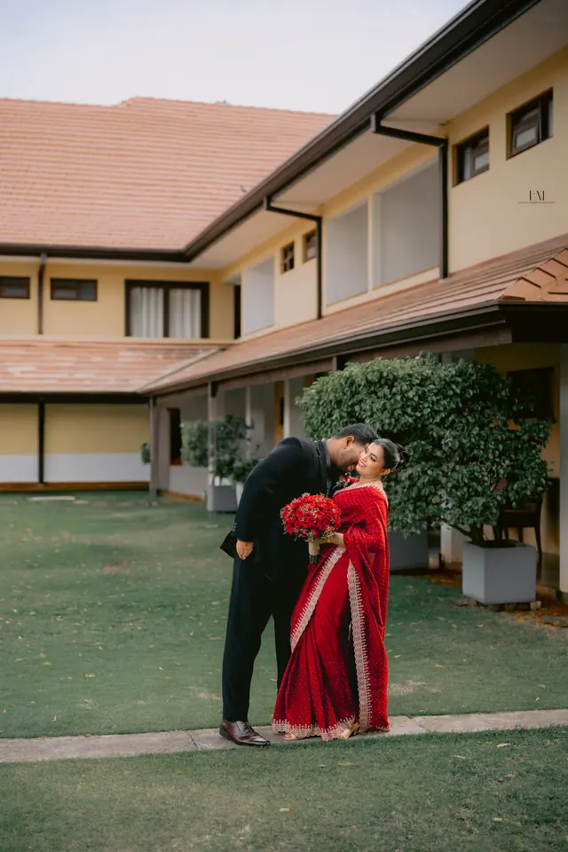
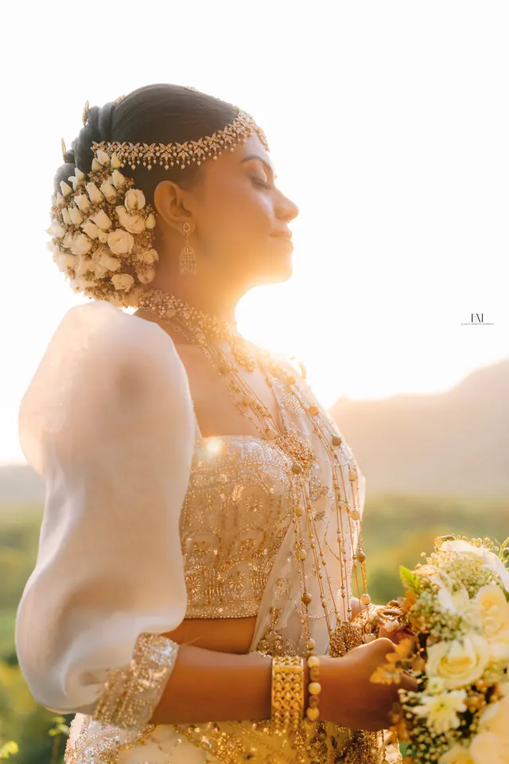
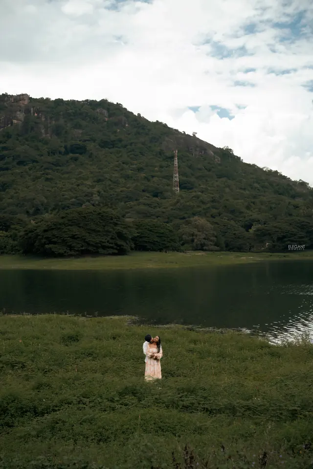
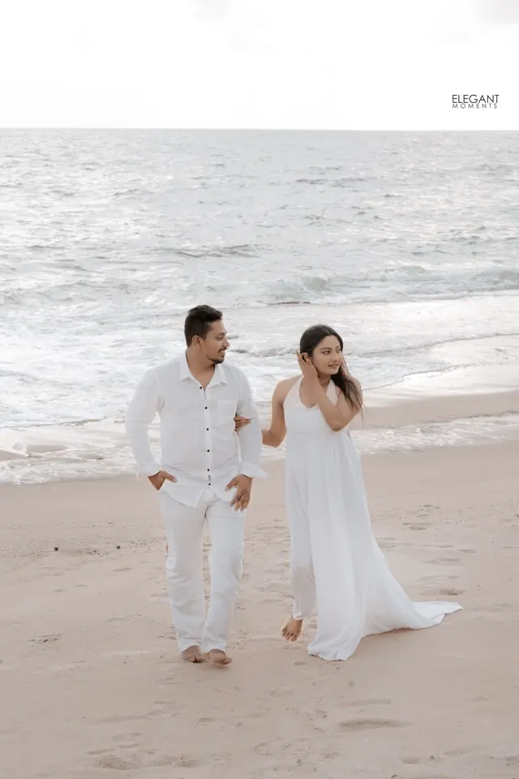
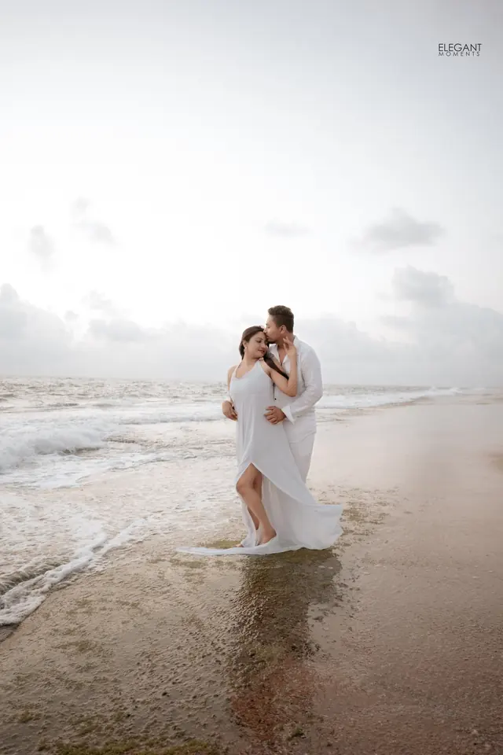
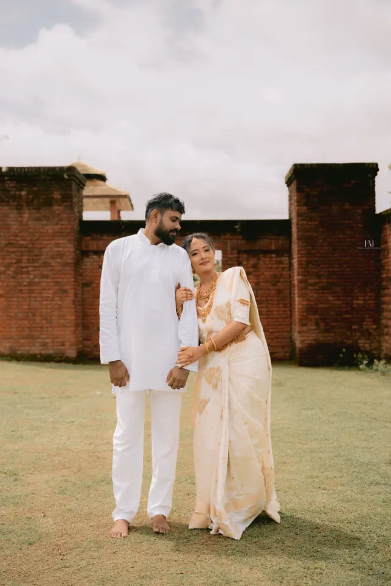
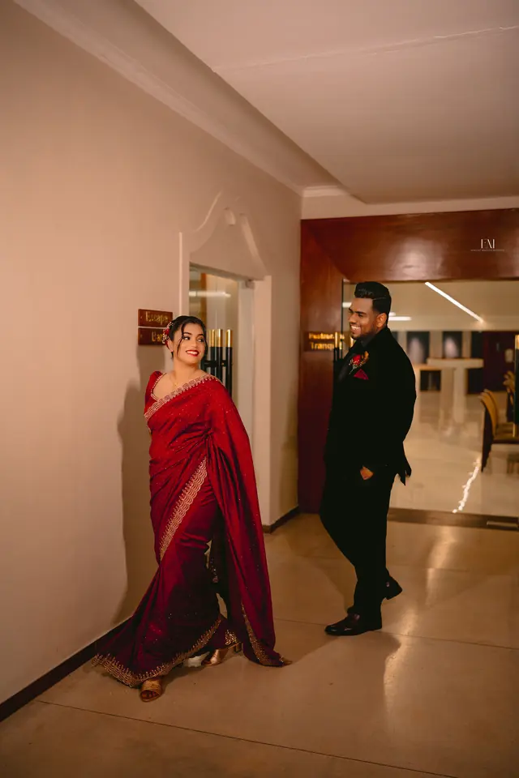

Your love story, beautifully told
Cinematic pre-shoots, Kandyan and western wedding shoots, homecomings and full wedding event coverage, from the first look to the last dance.


Every part of your celebration
Book one, or let us follow the whole story from pre-shoot to homecoming.
Pre-shoot
Lakeside, heritage city, temple, beach or studio. We scout the place and plan the light with you.
Discover
Wedding shoot
Couple portraits on the day, from Kandyan traditions to white gowns, in the best light.
Discover
Homecoming
The second celebration in full colour, with the same care as the first.
Discover
Wedding events
The ceremony as it happens: vows, rings, signing, family and every happy tear.
DiscoverEvery tradition, honoured
Our galleries include Kandyan weddings, traditional white wedding attire and western white-gown weddings. We don't just take photos on your wedding day. We follow the little looks, the nervous laughs and the happy tears, and turn them into a story you'll want to open again and again.
- Kandyan and traditional Sri Lankan weddings
- Western white-gown weddings
- Pre-shoot, wedding, homecoming and event coverage




Lakeside, heritage city or studio
We help you find the place that feels like the two of you.
- Lakesides
- Heritage buildings
- Temples
- Beaches
- Our studio
Moments we've captured






From first message to forever
Send your date
Tell us your wedding date and venue on WhatsApp.
We talk it through
Packages, locations and the plan for your day.
Pre-shoot
Get comfortable in front of the camera before the big day.
The wedding
You celebrate. We take care of the story.
Good to know
We are wedding photographers based in Anuradhapura, North Central Province, Sri Lanka. Our pre-shoots have taken couples to lakesides, heritage buildings, temples, beaches and our studio.
Pre-shoots, wedding shoots, homecoming photography and wedding event coverage. You can book one, or have us follow your whole celebration.
Yes. Our galleries include Kandyan weddings, traditional white wedding attire and western white-gown weddings.
Send your wedding date and venue on WhatsApp to +94 77 371 2683 or call 071 583 2683. The booking form writes the WhatsApp message for you.
Yes, through our studio, Elegant Moments Photography: family and kids, birthdays, maternity, portraits and graduation.
Is your date still free?
Send us your date and we'll confirm on WhatsApp. The booking form writes the message for you.